Lecture 2: Code Provisions
This section will cover how and why building codes are used. We will start with a brief introduction to the codes and how they are used today. The primary code used for the seismic exam is the 2019 California Building Code (CBC) with extensive reference to the ASCE 7-16 standard.
History of the Building Code
Until 1998, different building codes were used within the nation. Earthquake-prone cities and states of the U.S. (mostly the west coast) followed the Uniform Building Code (UBC) because it had more rigid earthquake design requirements. The rest of the country adhered to the National Building Code (NBC), or the Standard Building Code (SBC).
In 1995, Building Officials and Code Administrators International, Inc (BOCA), International Conference of Building Officials (ICBO), and Southern Building Code Congress International (SBCCI) agreed to unite into a single model building code development organization, which is now known as the International Code Council (ICC). The intent behind this unification was to publish a single building code that is nationally-recognized and applicable.
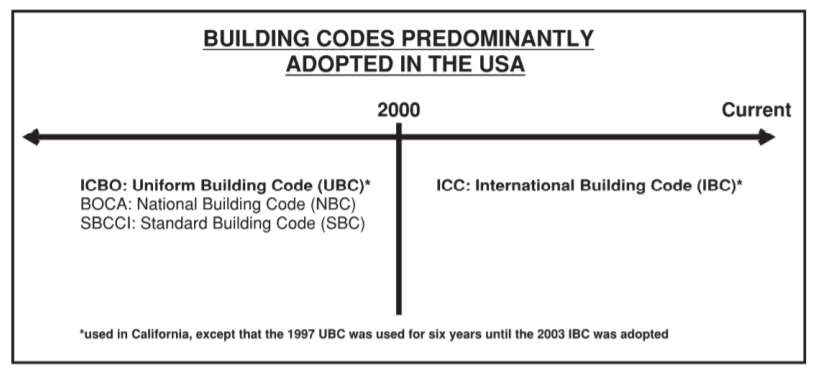In 2000, the International Building Code (IBC) was introduced as the combination of all different building codes by the ICC. Though the IBC is recognized as the primary building code for the nation, it is less adjustable to the local conditions and customs. Even then, most U.S. states and jurisdictions rely on the IBC for their basic provisions.
The IBC is routinely made state-specific. When a state adopts the IBC, they make modifications corresponding to the established practices in that region. Sometimes, local jurisdictions make further modifications to the state’s building code, but those are typically fewer in number. Adopted in the state of California, the California Building Code (CBC) is the modified state-specific version of IBC that sets the minimum requirements for all California jurisdictions.
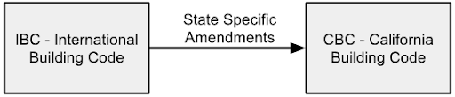The California Building Code (CBC)
Until 2003, the California Building Code (CBC) used the Uniform Building Code (UBC) as its model code. In 2003, California adopted the International Building Code (IBC) as the baseline for the future CBC. The IBC is updated every three years. The CBC adopts the most recent version of the IBC and is published with state amendments the following year. The following figure shows the new code development process.
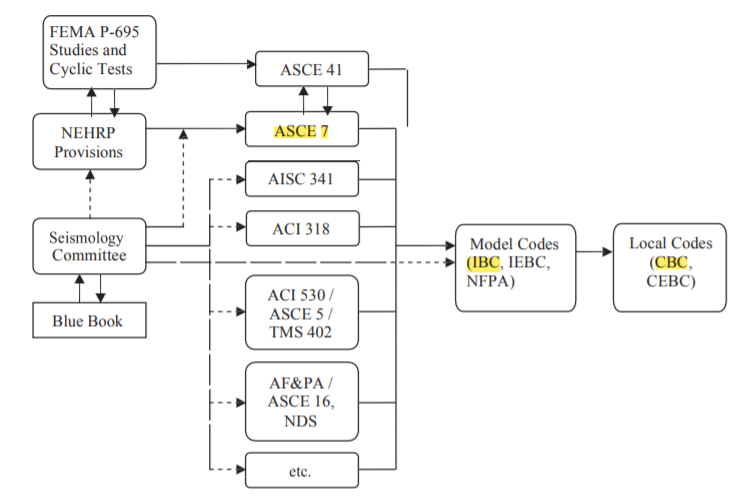In the above figure, a solid line indicates direct or near-direct adoption of one document by another, and a dashed line indicates its contribution to the development process.
The IBC code, hence the CBC code, is updated by carefully coordinating the standards, model codes, and resource documents such as the FEMA, NEHRP Provisions, etc. There exists an extended lag between a change proposal and an eventual new code or standards provision. Nationalization of the code has generally reduced the number of large changes from one edition to the next. This is primarily a function of the small window for substantive standards modification work within the three-year cycles of the IBC (CBC). Emergency revisions and amendments may still be promulgated by local jurisdictions.
Model building codes, such as the IBC, no longer print most of their own technical provisions. Instead, they adopt standards developed by other organizations, such as the American National Standards Institute (ANSI). For example, the IBC (CBC) adopts structural loading criteria (including earthquake design provisions) by reference to ASCE 7. An example is shown in the figure below where the CBC refers to ASCE 7 for earthquake loadings.
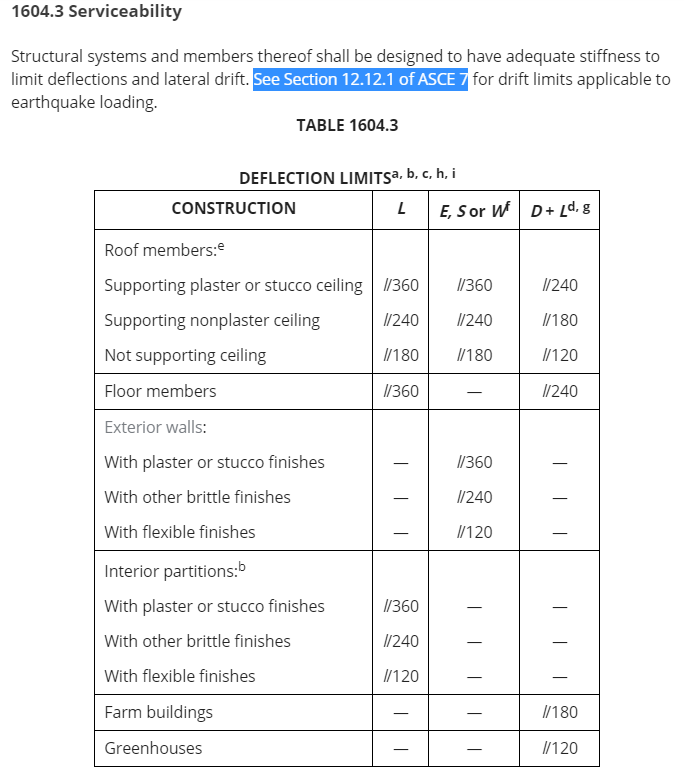This contrasts with past model codes that were self-sufficient documents. The new approach of adopting by reference requires users to consult multiple documents instead of a single code. Chapter 35 - ‘Referenced Standards’ of 2016 CBC has a list of all the standards that have been used for its content. An excerpt from the list is shown in the figure below:
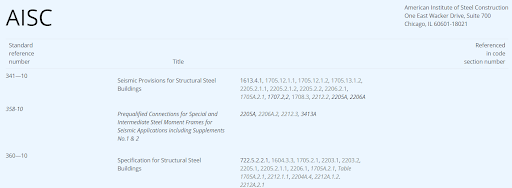This new approach of referring to different standards brings a necessary division of labor to the code development process. They also provide a measure of consistency and likeness between various model codes. On the other hand, if there is a discrepancy between the model codes, such as IBC (hence CBC), and any other code or standard, the CBC would likely be the one to follow.
Building Departments
Each city has an individual building department or division that handles the code compliance of construction projects to ensure building safety on a public front. Building departments can issue permits for construction, which means that they set the rules for those involved in projects to follow. Permits are required before starting the construction of any project that involves changes to an existing building or piece of land. They ensure compliance with local building codes. The building code in California, adopted by the building jurisdictions in the state, is the California Building Code (CBC). This means that the CBC must be followed first and foremost, before compliance to the ASCE 7 standard. Where the need arises, the CBC refers to the ASCE 7 standard, as discussed in the previous section.
If an engineering firm tries to design a building to a different standard, there could be serious consequences. First of all, the building code creates a reasonable assurance of safety for all structures designed to its standards. Designing outside those limits could pose an increased risk to the public, or add legal risk to the engineering designer. Second, the building department would not provide a permit for a building design that does not adhere to their adopted standard (CBC). If construction was attempted outside of the legal permitting process set by the local jurisdiction, then the jurisdiction would have the rights to prevent continued construction, with local police enforcement if necessary.
Usually engineers involved in the construction process know the expectations and rules of the local building department. Issues with building department enforcement tend to arise more when homeowners start construction without a licensed professional, or a permit. In those cases, the building department (perhaps notified by a concerned neighbor) can demand the home owners stop their work or tear it down unless a permit is obtained. Depending on the location, there are some jurisdictions that have also modified the building code to be specific for their particular city. Check-in with your local city for any unique modifications to the building code.
Image via Village of Posen
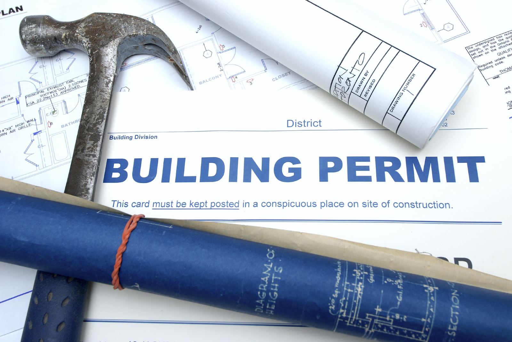 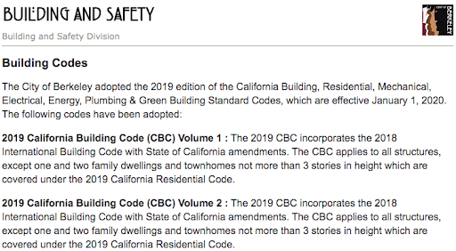ASCE 7 Design Philosophy
Building codes strive to provide guidance for building safety in design, based on different levels of damage or failure. For instance, the main members of a building can fall in three situations:
- 1.Members should not be damaged.
- 2. Members may sustain damage but can be replaced.
- 3. Members sustain irreversible damage; however, the building will be intact.
Thus, the design of buildings revolves around reducing damage to acceptable levels depending on the use of occupancy.
Based on historic evidence of buildings, ASCE 7 has established the probability of collapse. These probabilities have taken into consideration the exceedance over a given time interval for specific failures, and have been assigned to different risk categories. Note that engineers do not design for an exact probability of collapse since it is often an overestimation. Although the code aims to set the standard for structures to be designed, successful building design is a collaborative process between engineers, architects, and owners to ensure risk mitigation and life safety.
ASCE 7 Basic Load Combinations
All structures must be designed to support their own weight (dead load) along with any imposed forces such as live loads, snow loads, rain loads, etc. A structure never supports just one load. Hence, various loads are put into combinations to determine the most severe conditions for design. The load combinations provide a factor of safety for the design of a structure that supports multiple loads. The following figure is an excerpt from ASCE 7 that describes the various load combinations used for Strength Design (LRFD) and Allowable Stress Design (ASD).
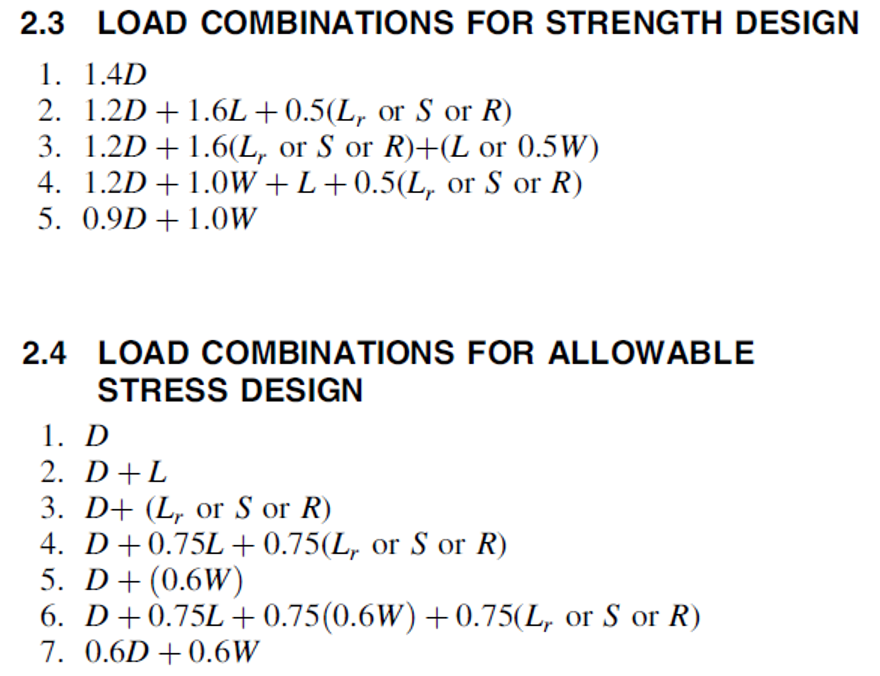Strength
Image via Northwest Arkansas News
Image via Quora
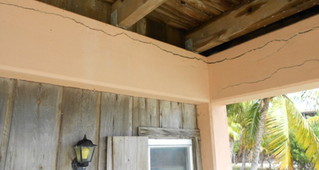Many buildings are built using code requirements through formulas and the selection of material type. There are two methods that are used to determine if the structural members have the necessary strength to resist imposed loads: Strength Design (LRFD) and Allowable Stress Design (ASD).
Load Resistance Factor Design (LRFD) uses different factors depending on the variability of the load. Dead loads are usually known, whereas live loads vary. In comparison to Allowable Stress Design, the goal of LRFD is to design structures to resist loads that do not occur frequently. For example, for design level earthquakes that occur roughly every 60 years, the structure will be designed for the ultimate load where failure is to be avoided.
On the other hand, Allowable Stress Design (ASD) handles loads through a single variable factor of safety for load and capacity. ASD aims to proportion the structure so that it can resist the loads during the life of the structure.
(Note that ASCE 7 will often refer to seismic loads as being at “strength level” which means the load is ready for use in the LRFD equations. For instance, notice that the earthquake load E is multiplied by 1.0 in all LRFD equations. This means that the earthquake forces determined by following the formulas in ASCE 7 are already at strength level, so there’s no need to factor prior to designing.)
Both methods are acceptable in practice, but it’s usage depends on the engineer’s preference. LRFD allows for a balanced statistical probability of failure, while ASD uses a single safety factor. The key difference between LRFD and ASD is that the large load factors from LRFD are absent from ASD. This means that the predictability of loads will not be considered. Notice that both the dead load D and live load L for ASD have the same load factor, which means they are both likely to occur at “strength level” simultaneously.
For the seismic exam, all the seismic loads that you determine by following ASCE 7 will be at “strength level.” You will only use ASD when performing specific demand capacity ratio checks, which will be covered in later sections.
Stiffness
Even though strength is a crucial criterion that needs to be satisfied to ensure that a building is designed to be structurally sound, there is also an important consideration for stiffness. For seismic design, earthquakes will cause forces to displace the building in the vertical and lateral directions. In the case that a structure does not have adequate stiffness, forces can induce large displacements leading to instability. Both the member and the structural system must be stiff enough to resist excessive deflections. Hence, the deflection of members must be checked to ensure serviceability.
Checking the stiffness is only one of many aspects that will be needed to design a building with a good configuration and a reasonable framing system. If the design is not good to begin with, all an engineer can do is put on a really expensive band-aid on the building i.e. improve the bad design due to immense deflection. Alternatively, a building that has been designed properly, which includes checking for stiffness and deflection, would not be expected to do much harm.
Image via Cornell Courses
Risk of Collapse
Buildings can fail; however, proper design and adherence to the codes will minimize its occurrence. The risk of collapse can be caused by many different factors such as construction and foundation failure, overbearing of loads, and overlooking details from contractors. Building failure can be considered as one or a combination of the risk. In the case a building collapses, there tends to be a game of pointing fingers at whom is at fault. This could include developers, architects, engineers, or city/government agencies.
The following figure describes the total number of building failures over the past decade across the United States.
Image via Semantics Scholar
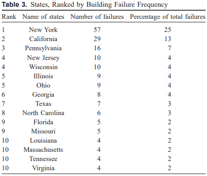Image via Semantics Scholar
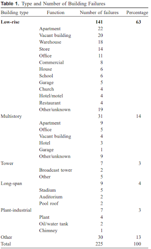Another figure to highlight residential homes in California inspected to determine their hazardness to occupants is presented below. There are tags with different colors indicating their level of hazard: “green” poses no threat, “yellow” poses a moderate threat to which occupants will be able to re-enter the structure, and “red” is deemed hazardous.
Image Via Homeland Security Digital Library
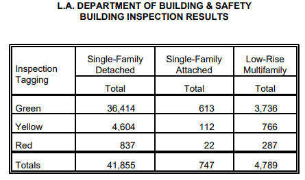Prevention Measures for Structural Collapse
Structures must be able to withstand anything, just like Superman...at least that’s the goal. In the case that structures are not stable, there are precautionary measures that must be taken. For instance, temporary bracing can be placed during inspections to assess the stability of the structure. This allows engineers enough time for risk assessment to ensure that there is no imminent danger of building collapse .
Developing techniques to prevent structural collapse is no simple task since there is no one method to estimate the consequences of a building failure. There are mathematical formulas and regulations to prevent the possibility of a building failing.
Aside from the calculation aspect of a structural engineer, there is also the need to be in compliance with various safety regulations. Chapter 17 of the California Building Code (CBC) establishes the requirements for specific inspections and the tests needed to obtain a building permit. Imagine Gordon Ramsey’s sous chef creating components of a dish, he must ensure everything on the plate is perfect before sending it out to the customer. Similarly, a structural engineer must coordinate with a special inspector to ensure each component designed in a building is adequate for building safety. Thus, a certificate of occupancy is requested from the local jurisdiction at the same time as the building permit. Once the final inspection has been completed (passed), the Certificate of Occupancy will be issued to the homeowner/appointed representative. This indicates that the building has been approved by the local jurisdiction for occupancy.
Seismic Principles Exam
The Seismic Principles Exam covers the necessary concepts related to the seismic analysis and design of structural projects in California. This includes buildings, non-structural components, and nonbuilding structures. The exam material comes primarily out of the ASCE 7 standard. You don’t need to learn about the background or the origins of the codes and standards, you just need to know how to apply the standards and guidelines from the code book. Most of the exam material focuses on only a few chapters in ASCE 7. Becoming exceptionally familiar with these primary sections from the code while studying will help you in passing the exam. Here is a link to the topics that will be tested on the Seismic Exam:
- To sum it up, you don’t need to know a lot about earthquakes or structural design; however, you do need to understand and be able to apply the guidelines and rules from the code. Becoming best friends with ASCE 7 will help you out greatly for the exam.
https://www.bpelsg.ca.gov/applicants/plan_civseism.pdf
Additional Details
Image via Wikipedia
References:
1. SEAOC Seismology Committee (2019). “Development of Earthquake Design Provisions for Building Codes,” August 2019, The SEAOC Blue Book: Seismic Design Recommendations, Structural Engineers Association of California, Sacramento, CA.
- 2. Zimmerman, R. (2015, March). Acceptable Collapse? Retrieved October 02, 2020
- 3. What are Special Inspections?
- 4. What Should Engineers Know About IBC?
- 5. Damage to Buildings from Northridge Earthquake